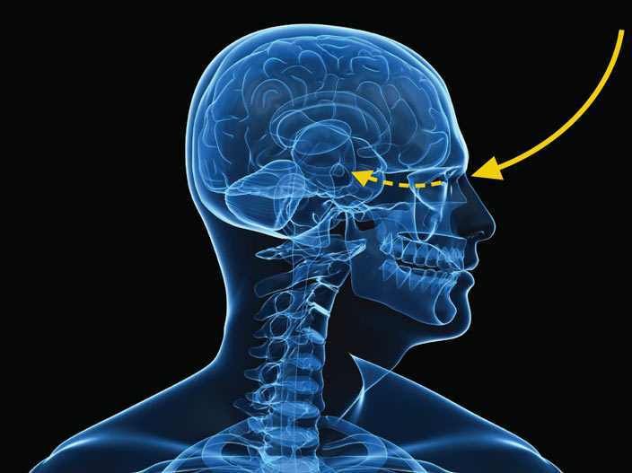
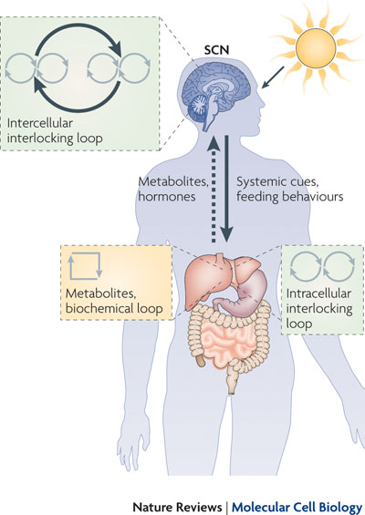
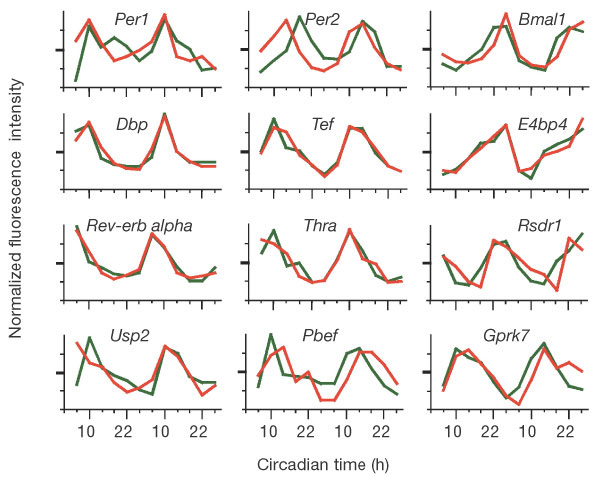
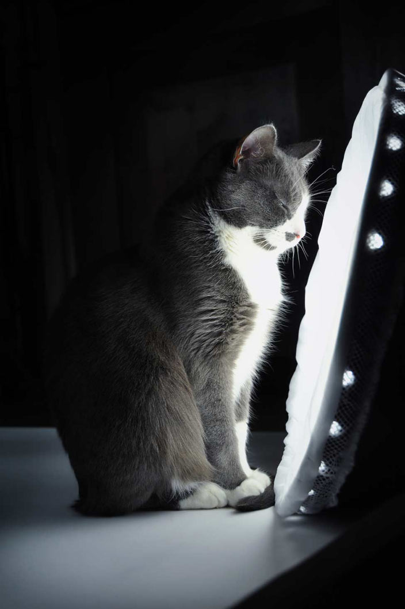

The master circadian clock that regulates 24-hour cycles throughout our bodies is found in a region called the suprachiasmatic nuclei (SCN) in the hypothalamus of the brain. The SCN is made up of two tiny clusters of several thousand nerve cells that "tell time" based on external cues, such as light and darkness. The SCN regulates sleep, metabolism, and hormone production.
How important is the SCN? When a rat's SCN is removed, its daily cycle of activity and sleep is disrupted. The SCN still produces rhythmic chemical signals, even outside of an animal's brain.


The SCN is believed to synchronize "local" clocks that sit in organs and tissues throughout the body, either through hormones or changes in body temperature. Local gene-operated clocks independent of the brain's master pacemaker have been found in the liver, lung, testis, connective tissue, and muscle.
One example of a local clock comes from fruit flies. Cells in their antennae display a circadian rhythm independent of the brain's master clock. The antennae oscillations correlate with sense of smell, which is more sensitive at night than during the day.
Circadian rhythms are controlled by "clock genes" that code for clock proteins. The levels of these proteins rise and fall in rhythmic patterns. These oscillating biochemical signals control various functions, including when we sleep and rest, and when we are awake and active.
Clock genes are sets of instructions that code for clock proteins. The genes and proteins interact with each other to produce daily fluctuations in protein levels. The central player is the per gene, which codes for PER protein. PER levels are highest during early evening and lowest early in the day.


Understanding exactly how clock genes work may help scientists develop new medicines that adjust or reset the human biological clock to treat the ill effects of jet lag, night shift work, or wintertime depression. Clock genes may also offer clues to sleep disorders such as narcolepsy, which makes people feel sleepy during the day.
Clock genes may some day help scientists treat cancer. At least eight clock genes are known to coordinate normal functions such as cell proliferation (which is uncontrolled in cancer) and cell suicide (which fails to occur in tumor cells). One study found that without the mPer2 gene, mouse cells with damaged DNA become cancerous instead of committing cell suicide. If clock genes actually play a role in cancer, they could be a target for new drugs that might disrupt the "clock" to halt the cancer.